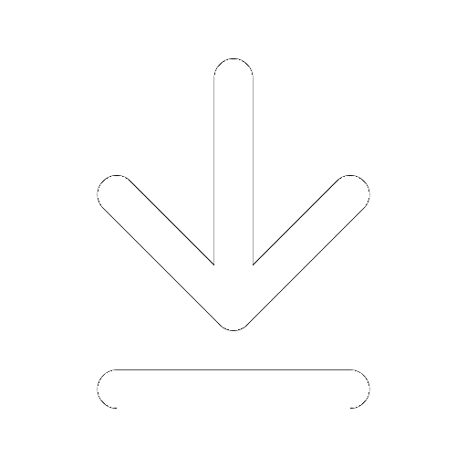
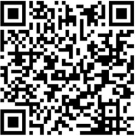

Qualidade
Compromisso com a Qualidade
Na Mão Colorida, a excelência no controle de qualidade é o pilar que sustenta
nossa reputação e sucesso na comunicação visual. Valorizamos cada detalhe do processo criativo e
produtivo para garantir que nossos clientes recebam produtos que superem suas expectativas.
O Que é Controle de Qualidade?
O controle de qualidade é o conjunto de práticas e processos que implementamos para assegurar que
nossos serviços e produtos atendam aos mais altos padrões de precisão, durabilidade e estética. Na
Mão Colorida, isso envolve desde a concepção e design até a produção final e entrega.
Cartões de Melhoria
Na Mão Colorida, acreditamos que a inovação e a melhoria contínua são
fundamentais para nosso sucesso e crescimento. Para isso, estamos lançando os "Cartões de Melhoria",
um sistema que incentiva todos os colaboradores a contribuir com suas ideias para aprimorar nossos
processos, produtos e ambiente de trabalho.
O Que São os Cartões de Melhoria?
Os Cartões de Melhoria são ferramentas simples e eficazes que permitem a todos os colaboradores
sugerirem melhorias de forma rápida e fácil. Essas sugestões podem abranger diversas áreas, como
eficiência operacional, segurança, qualidade do produto, ambiente de trabalho, e mais:
Veja o arquivo explicando detalhadamente sobre os Cartões de Melhoria clicando aqui:

Abra seu Cartão de Melhoria de fomar virtual:

Identificação de Produtos Não Conformes
Na Mão Colorida, nossa missão é entregar produtos de comunicação visual que
superem as expectativas de nossos clientes. Parte essencial de garantir essa excelência é a
identificação rigorosa de produtos não conformes. Entender e implementar um processo eficaz de
identificação de não conformidades é fundamental para manter e elevar nossos padrões de qualidade.
O Que São Produtos Não Conformes?
Produtos não conformes são aqueles que, por qualquer motivo, não atendem às especificações ou
padrões de qualidade estabelecidos. Essas não conformidades podem surgir em diversas fases do
processo produtivo
A tratativa para não conformidades é feita conforme o processo definido no
Procedimento MC0003, disponível para consulta na fábrica (área de quarentena) e na pasta “QUALIDADE”
da rede virtual da Mão Colorida (público-qualidade- procedimentos).
Todas as não conformidades devem ser repassadas ao encarregado do setor envolvido.